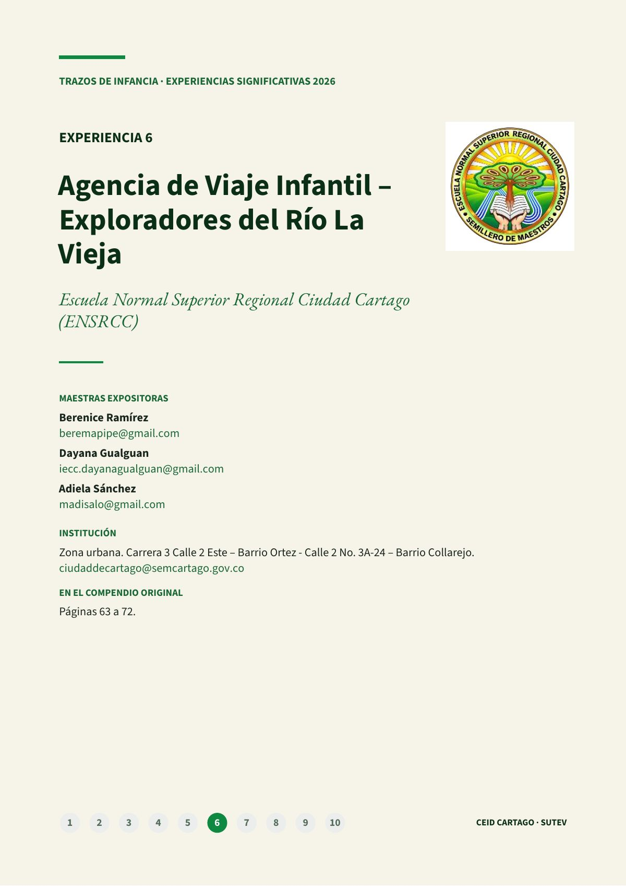
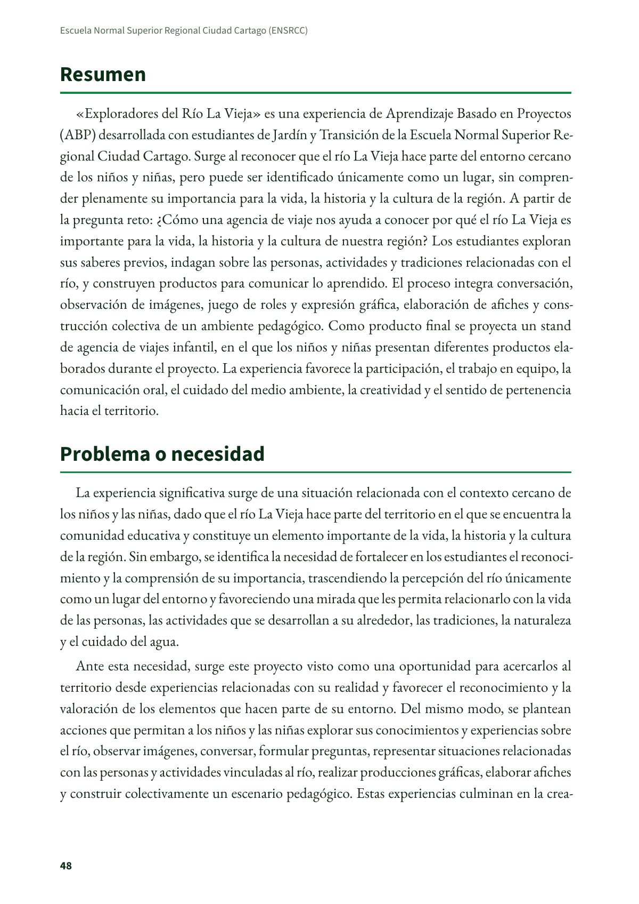
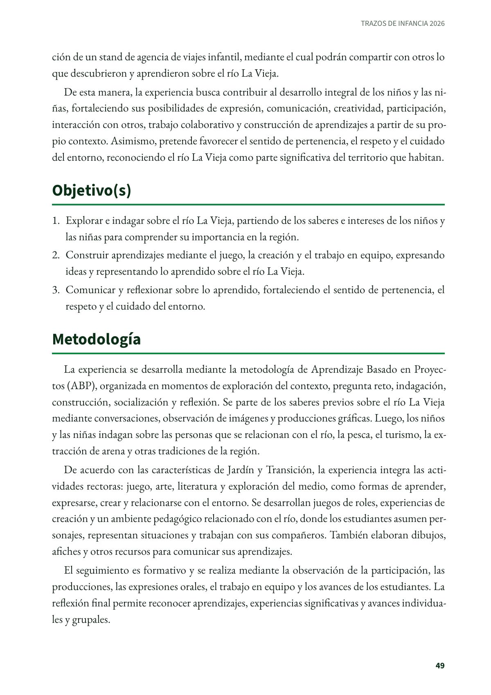
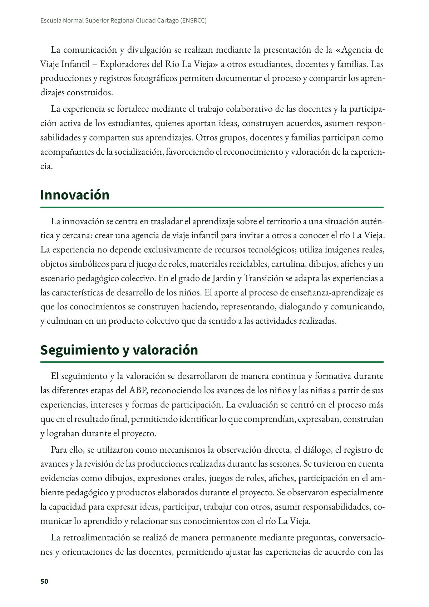
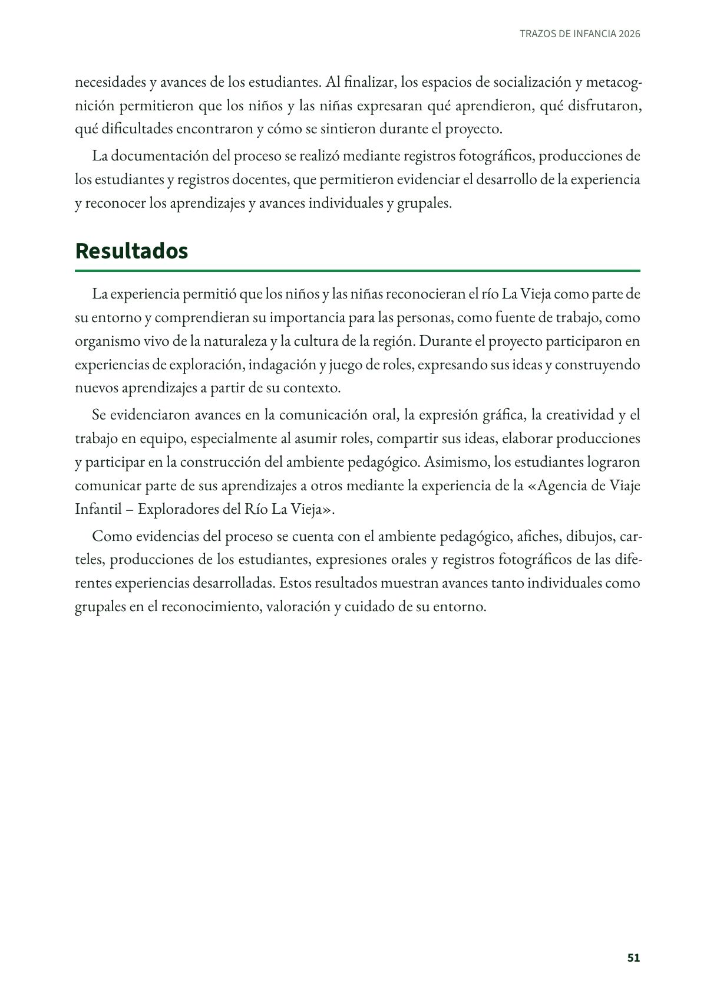
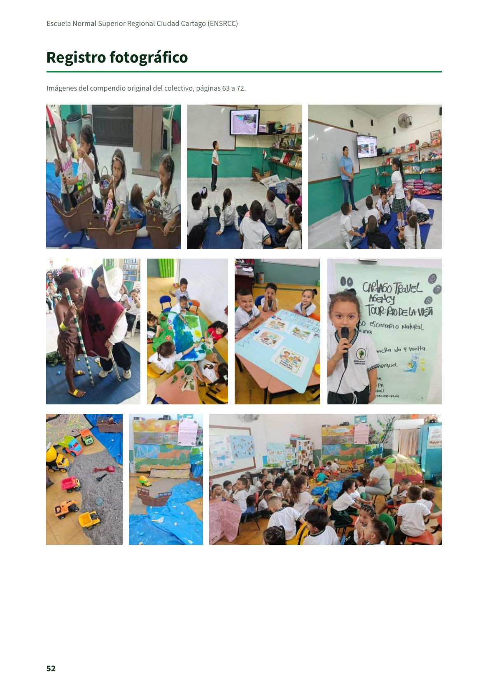
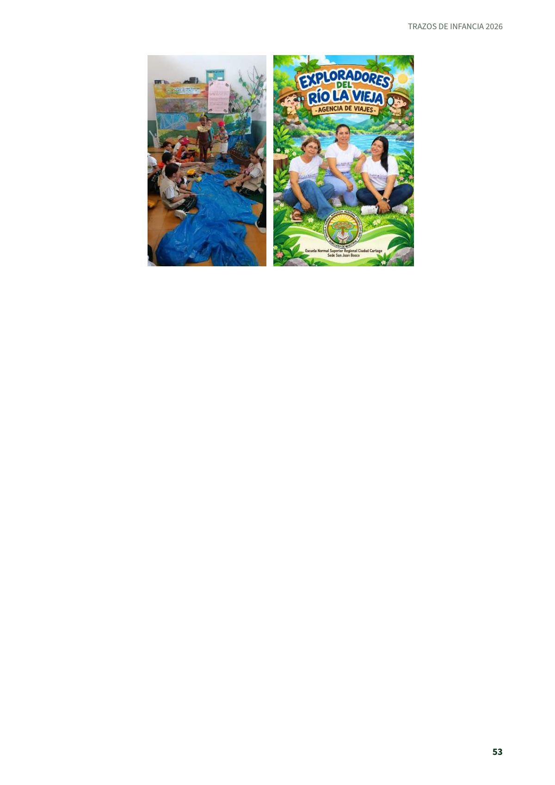

Agencia de Viaje Infantil – Exploradores del Río La Vieja
Experiencia significativa en educación inicial de la Escuela Normal Superior Regional Ciudad Cartago, de Cartago, tal como la presentaron sus maestras en el compendio del colectivo Trazos de Infancia.
PDF · 7 págs. · 313 KBResumen
«Exploradores del Río La Vieja» es una experiencia de Aprendizaje Basado en Proyectos (ABP) desarrollada con estudiantes de Jardín y Transición de la Escuela Normal Superior Regional Ciudad Cartago. Surge al reconocer que el río La Vieja hace parte del entorno cercano de los niños y niñas, pero puede ser identificado únicamente como un lugar, sin comprender plenamente su importancia para la vida, la historia y la cultura de la región. A partir de la pregunta reto: ¿Cómo una agencia de viaje nos ayuda a conocer por qué el río La Vieja es importante para la vida, la historia y la cultura de nuestra región? Los estudiantes exploran sus saberes previos, indagan sobre las personas, actividades y tradiciones relacionadas con el río, y construyen productos para comunicar lo aprendido. El proceso integra conversación, observación de imágenes, juego de roles y expresión gráfica, elaboración de afiches y construcción colectiva de un ambiente pedagógico. Como producto final se proyecta un stand de agencia de viajes infantil, en el que los niños y niñas presentan diferentes productos elaborados durante el proyecto. La experiencia favorece la participación, el trabajo en equipo, la comunicación oral, el cuidado del medio ambiente, la creatividad y el sentido de pertenencia hacia el territorio.
Problema o necesidad
La experiencia significativa surge de una situación relacionada con el contexto cercano de los niños y las niñas, dado que el río La Vieja hace parte del territorio en el que se encuentra la comunidad educativa y constituye un elemento importante de la vida, la historia y la cultura de la región. Sin embargo, se identifica la necesidad de fortalecer en los estudiantes el reconocimiento y la comprensión de su importancia, trascendiendo la percepción del río únicamente como un lugar del entorno y favoreciendo una mirada que les permita relacionarlo con la vida de las personas, las actividades que se desarrollan a su alrededor, las tradiciones, la naturaleza y el cuidado del agua.
Ante esta necesidad, surge este proyecto visto como una oportunidad para acercarlos al territorio desde experiencias relacionadas con su realidad y favorecer el reconocimiento y la valoración de los elementos que hacen parte de su entorno. Del mismo modo, se plantean acciones que permitan a los niños y las niñas explorar sus conocimientos y experiencias sobre el río, observar imágenes, conversar, formular preguntas, representar situaciones relacionadas con las personas y actividades vinculadas al río, realizar producciones gráficas, elaborar afiches y construir colectivamente un escenario pedagógico. Estas experiencias culminan en la creación de un stand de agencia de viajes infantil, mediante el cual podrán compartir con otros lo que descubrieron y aprendieron sobre el río La Vieja.
De esta manera, la experiencia busca contribuir al desarrollo integral de los niños y las niñas, fortaleciendo sus posibilidades de expresión, comunicación, creatividad, participación, interacción con otros, trabajo colaborativo y construcción de aprendizajes a partir de su propio contexto. Asimismo, pretende favorecer el sentido de pertenencia, el respeto y el cuidado del entorno, reconociendo el río La Vieja como parte significativa del territorio que habitan.
Objetivo(s)
- Explorar e indagar sobre el río La Vieja, partiendo de los saberes e intereses de los niños y las niñas para comprender su importancia en la región.
- Construir aprendizajes mediante el juego, la creación y el trabajo en equipo, expresando ideas y representando lo aprendido sobre el río La Vieja.
- Comunicar y reflexionar sobre lo aprendido, fortaleciendo el sentido de pertenencia, el respeto y el cuidado del entorno.
Metodología
La experiencia se desarrolla mediante la metodología de Aprendizaje Basado en Proyectos (ABP), organizada en momentos de exploración del contexto, pregunta reto, indagación, construcción, socialización y reflexión. Se parte de los saberes previos sobre el río La Vieja mediante conversaciones, observación de imágenes y producciones gráficas. Luego, los niños y las niñas indagan sobre las personas que se relacionan con el río, la pesca, el turismo, la extracción de arena y otras tradiciones de la región.
De acuerdo con las características de Jardín y Transición, la experiencia integra las actividades rectoras: juego, arte, literatura y exploración del medio, como formas de aprender, expresarse, crear y relacionarse con el entorno. Se desarrollan juegos de roles, experiencias de creación y un ambiente pedagógico relacionado con el río, donde los estudiantes asumen personajes, representan situaciones y trabajan con sus compañeros. También elaboran dibujos, afiches y otros recursos para comunicar sus aprendizajes.
El seguimiento es formativo y se realiza mediante la observación de la participación, las producciones, las expresiones orales, el trabajo en equipo y los avances de los estudiantes. La reflexión final permite reconocer aprendizajes, experiencias significativas y avances individuales y grupales.
La comunicación y divulgación se realizan mediante la presentación de la «Agencia de Viaje Infantil – Exploradores del Río La Vieja» a otros estudiantes, docentes y familias. Las producciones y registros fotográficos permiten documentar el proceso y compartir los aprendizajes construidos.
La experiencia se fortalece mediante el trabajo colaborativo de las docentes y la participación activa de los estudiantes, quienes aportan ideas, construyen acuerdos, asumen responsabilidades y comparten sus aprendizajes. Otros grupos, docentes y familias participan como acompañantes de la socialización, favoreciendo el reconocimiento y valoración de la experiencia.
Innovación
La innovación se centra en trasladar el aprendizaje sobre el territorio a una situación auténtica y cercana: crear una agencia de viaje infantil para invitar a otros a conocer el río La Vieja. La experiencia no depende exclusivamente de recursos tecnológicos; utiliza imágenes reales, objetos simbólicos para el juego de roles, materiales reciclables, cartulina, dibujos, afiches y un escenario pedagógico colectivo. En el grado de Jardín y Transición se adapta las experiencias a las características de desarrollo de los niños. El aporte al proceso de enseñanza-aprendizaje es que los conocimientos se construyen haciendo, representando, dialogando y comunicando, y culminan en un producto colectivo que da sentido a las actividades realizadas.
Seguimiento y valoración
El seguimiento y la valoración se desarrollaron de manera continua y formativa durante las diferentes etapas del ABP, reconociendo los avances de los niños y las niñas a partir de sus experiencias, intereses y formas de participación. La evaluación se centró en el proceso más que en el resultado final, permitiendo identificar lo que comprendían, expresaban, construían y lograban durante el proyecto.
Para ello, se utilizaron como mecanismos la observación directa, el diálogo, el registro de avances y la revisión de las producciones realizadas durante las sesiones. Se tuvieron en cuenta evidencias como dibujos, expresiones orales, juegos de roles, afiches, participación en el ambiente pedagógico y productos elaborados durante el proyecto. Se observaron especialmente la capacidad para expresar ideas, participar, trabajar con otros, asumir responsabilidades, comunicar lo aprendido y relacionar sus conocimientos con el río La Vieja.
La retroalimentación se realizó de manera permanente mediante preguntas, conversaciones y orientaciones de las docentes, permitiendo ajustar las experiencias de acuerdo con las necesidades y avances de los estudiantes. Al finalizar, los espacios de socialización y metacognición permitieron que los niños y las niñas expresaran qué aprendieron, qué disfrutaron, qué dificultades encontraron y cómo se sintieron durante el proyecto.
La documentación del proceso se realizó mediante registros fotográficos, producciones de los estudiantes y registros docentes, que permitieron evidenciar el desarrollo de la experiencia y reconocer los aprendizajes y avances individuales y grupales.
Resultados
La experiencia permitió que los niños y las niñas reconocieran el río La Vieja como parte de su entorno y comprendieran su importancia para las personas, como fuente de trabajo, como organismo vivo de la naturaleza y la cultura de la región. Durante el proyecto participaron en experiencias de exploración, indagación y juego de roles, expresando sus ideas y construyendo nuevos aprendizajes a partir de su contexto.
Se evidenciaron avances en la comunicación oral, la expresión gráfica, la creatividad y el trabajo en equipo, especialmente al asumir roles, compartir sus ideas, elaborar producciones y participar en la construcción del ambiente pedagógico. Asimismo, los estudiantes lograron comunicar parte de sus aprendizajes a otros mediante la experiencia de la «Agencia de Viaje Infantil – Exploradores del Río La Vieja».
Como evidencias del proceso se cuenta con el ambiente pedagógico, afiches, dibujos, carteles, producciones de los estudiantes, expresiones orales y registros fotográficos de las diferentes experiencias desarrolladas. Estos resultados muestran avances tanto individuales como grupales en el reconocimiento, valoración y cuidado de su entorno.
Maestras e institución
- Berenice Ramírez: beremapipe@gmail.com
- Dayana Gualguan: iecc.dayanagualguan@gmail.com
- Adiela Sánchez: madisalo@gmail.com
- Institución: Escuela Normal Superior Regional Ciudad Cartago (ENSRCC), zona urbana, Carrera 3 Calle 2 Este – Barrio Ortez - Calle 2 No. 3A-24 – Barrio Collarejo. ciudaddecartago@semcartago.gov.co
Así se ve en el libro
7 páginas





